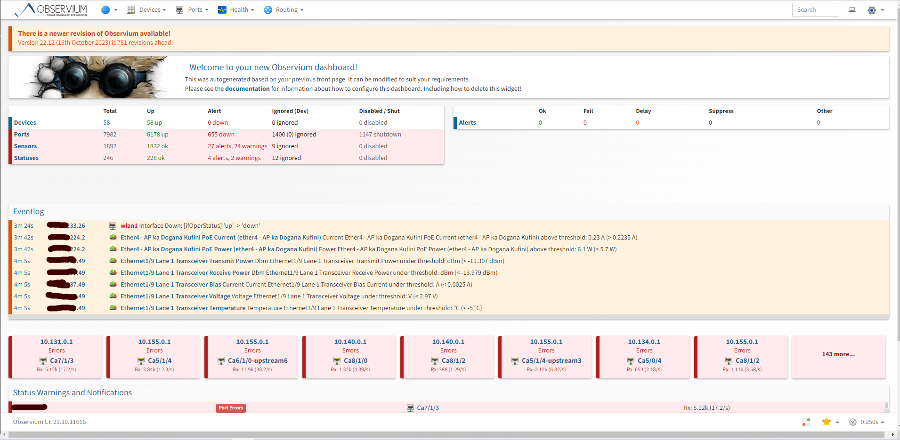
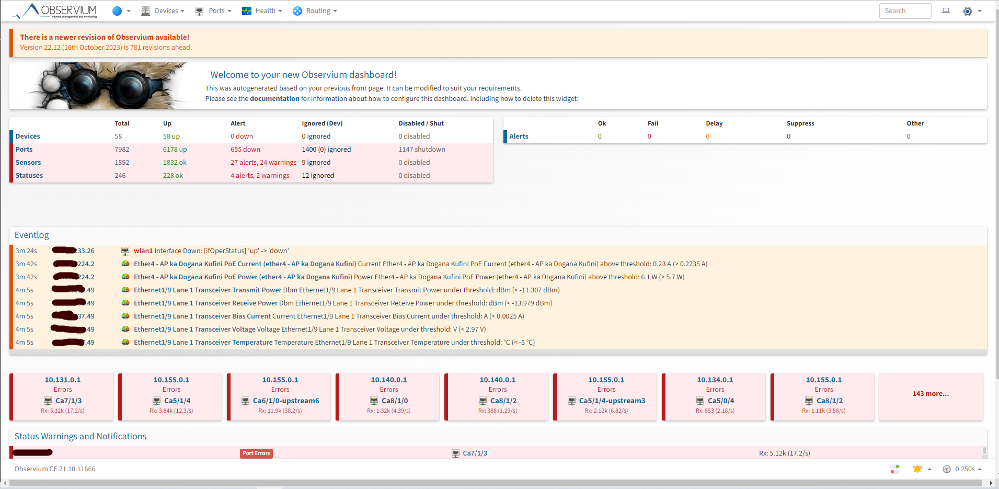
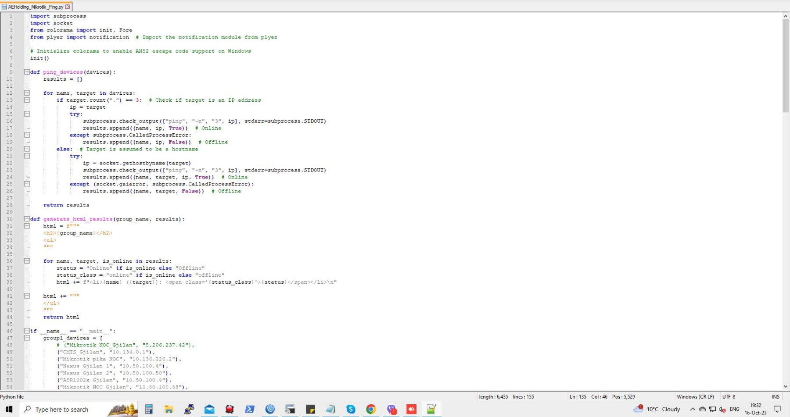
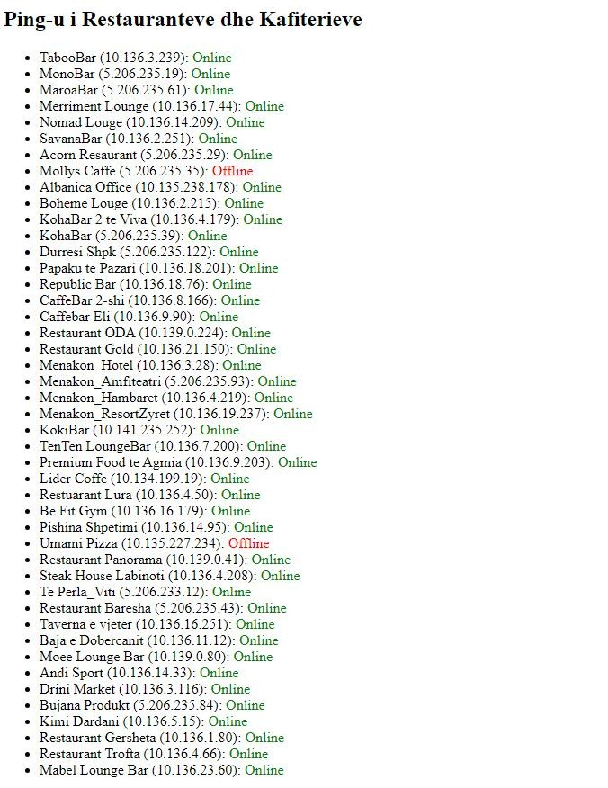
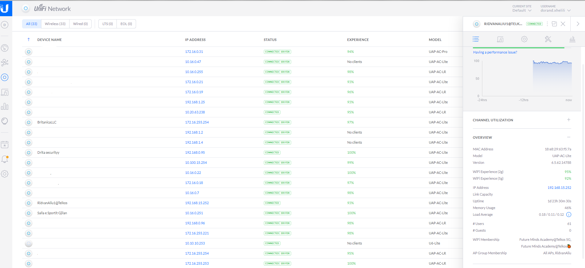

Telkos Monitoring System
This project was created exclusively for the Telkos company, for use in many areas of the company's internal network.
This project was created exclusively for the Telkos company, for use in many areas of the company's internal network.
The second project that I created is also for ISP Telkos, is an automated Python Script for checking ping of variety devices. correct location of their office.
 This is an Cloud Server destined for managing Unifi Wireless Access Points from Offices, Homes, mobiles devices, etc. We can host many devices here and is very ease to use.
